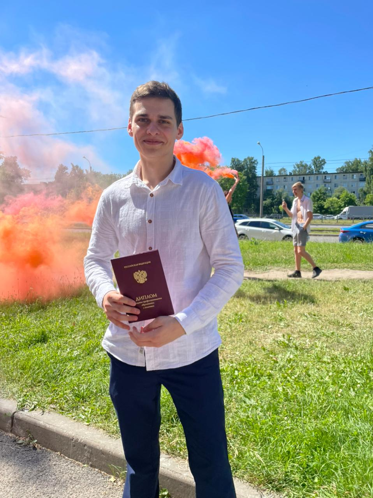

Закончил "Колледж Кулинарного Мастераства с красным дипломом

|  |
|
Закончил "Колледж Кулинарного Мастераства с красным дипломом
Люблю активный вид отдыха, в частности обожаю спортивный туризм
Начинающий кузнец , безумно медитативный процесс , когда получаеться что то выковать радость просто переполняет
Очень люблю работу с деревом, как будто заряжаешься какой то энергией, делаю брелки,востанавливаю ручки на инструментах , делал верстак
Безумно люблю спорт , раньше играл в баскетбол, обучался в школе молодого каюра(ездил на нартах с собаками и т.п.), ходил в походы , сейчас фитнес и очень заинтересовал паурлифтнг и спортивная гимнастика
Работа с глиной очень медитативный процесс , иногда представляешь себя на месте героев фильма "приведение", строю печки , из ресурсов которые вокруг меня :глина песок салома и тд
Очень нравиться химия метала, изучаю это ремесло в будущем планирую купить инвентарь для производсва колец и браслетов
Люблю делать разные мемы , так что если у меня в руках оказалась твоя неудачная фотография берегись ))
Туризм у меня в сердце , это самые прекрасные моменты в жизни, был 2 раза в Хибинах , один раз ездил на Кавказ Домбай
Очень люблю работу с тестом , очень завораживает а когда получаеться 1 в 1 как оригинал это отдельный вид счастья